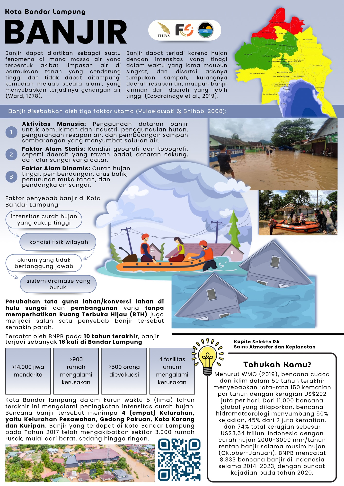

Banjir
Kelompok 7
Kapita Selekta - RA
Scroll Down
Anggota Kelompok
Restu Tri Wijaya
Gilang Rama Syaputra
Nikita Aulia Titania
Yemima Eminta Br. Tarigan
Poster

×
Referensi
Referensi 1
Referensi 2
Referensi 3
Referensi 4